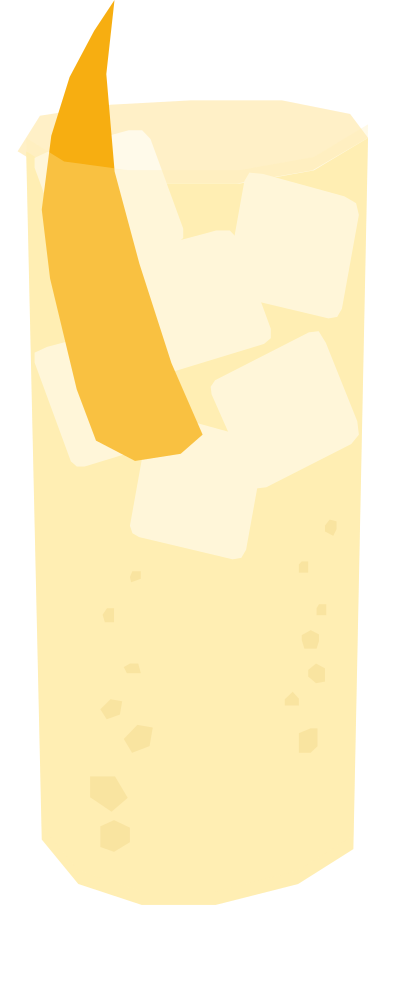

¿Qué pasa entre los jóvenes?
Popularizado por la marca Suntory en los años 50 con su whisky Kakubin, como una forma más ligera y refrescante de beber whisky. En 2008-2009 la propia Suntory relanzó una campaña masiva que revivió su popularidad entre los jóvenes japoneses.
RECETA
- 50 ml whisky japonés
- 150 ml agua mineral con gas
- Hielo en cubos
- Twist de limón o naranja
- Llena un vaso alto con hielo y enfríalo bien.
- Agrega el whisky y mezcla suavemente.n
- Completa lentamente con agua mineral con gas.
- Mezcla una sola vez de abajo hacia arriba para conservar las burbujas.
- Agrega el twist de limón o naranja para decorar.
Vaso: Vaso alto (highball)